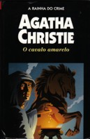

O Cavalo Amarelo
The Pale Horse
Um sacerdote ancião é assassinado em um subúrbio de Londres. Um crime aparentemente comum. Porém, um papel escondido no sapato do morto desperta a atenção do inspetor Lejeune: uma lista com nomes de pessoas que aparentemente haviam morrido de causas naturais e outra relação de vítimas potenciais. A investigação o leva a Pale Horse, onde vivem três mulheres estranhas — uma espécie de reencarnação moderna das bruxas de Macbeth. Lá ele descobre uma organização criminosa que pratica crimes através de telepatia. Utilizando métodos pouco ortodoxos, Lejeune consegue desvendar uma das tramas mais surpreendentes de Agatha Christie.
Arthur Nogueira: Mark Easterbrook é um historiador inglês de vida pacata e sossegada, até um reverendo idoso morrer misteriosamente em uma noite de nevoeiro, intrigado pelo caso, ele, Ariadne Oliver e uma moça chamada Ginger, tentam resolver o mistério que paira na antiga pensão chamada o cavalo amarelo. Onde as pessoas são mortas por telepatia.